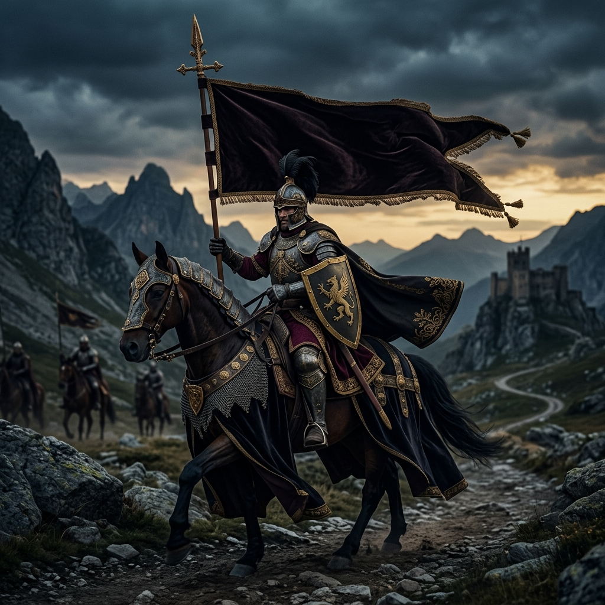

THE Royal LEGACY
The Royals were warriors, poets, and patrons of art. Their legacy of valor, honor, and refined taste has shaped the cultural landscape of Rajasthan for centuries. At Banna Ri Coffee, we carry this legacy forward — not through swords, but through sips and bites that tell a royal story.
THE INSPIRATION
Jodhpur — the Blue City — is home to the magnificent Mehrangarh Fort, one of the largest forts in India. Standing 400 feet above the city, it has witnessed centuries of royal legacy. Our café draws its soul from these very walls.


THE WARRIOR SPIRIT
"Banna" in Rajasthani Marwari refers to the bridegroom — a symbol of celebration, honor, and new beginnings. Every Banna carries the pride of his lineage, and our café carries the pride of Royal's culinary traditions.
THE ROYAL KITCHEN
Royal royal kitchens were famous for their innovative recipes — blending local ingredients with techniques from across India. We follow the same philosophy: taking familiar café favorites and infusing them with the bold, vibrant flavors of Rajasthan.


THE BLUE CITY
The blue-painted houses of Jodhpur were originally a symbol of Brahmin homes, but over time, the entire city adopted this distinctive color. Our navy blue brand identity is a tribute to this iconic heritage that defines our beloved city.